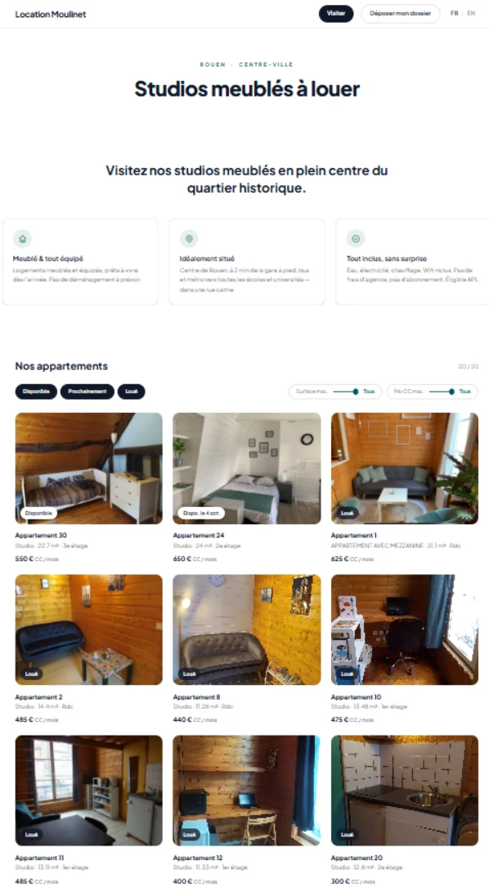
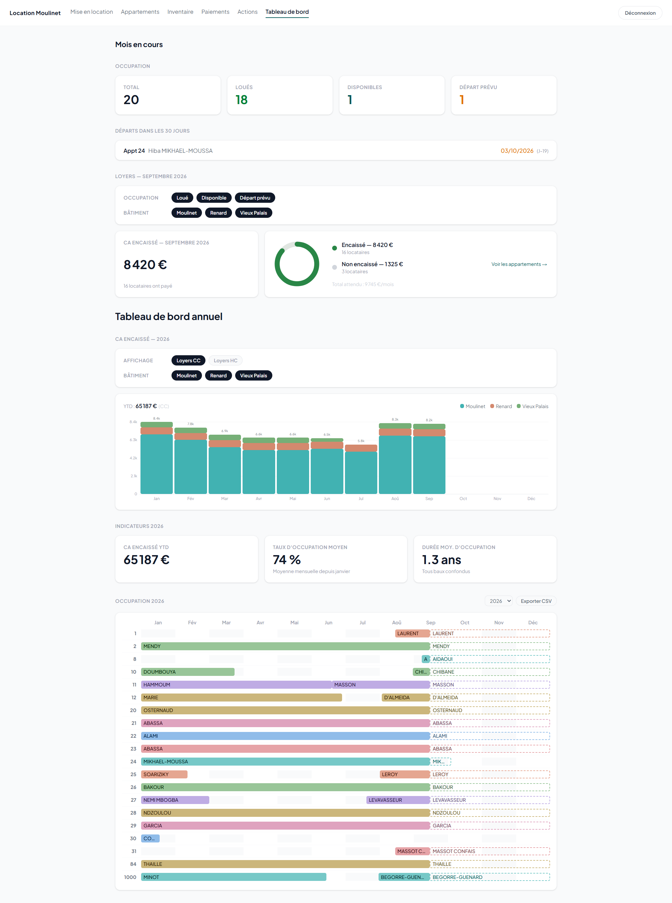

Système de gestion locative complet, conçu et développé pour un portefeuille de 20 logements répartis sur 4 immeubles à Rouen — du premier contact visiteur jusqu'à la sortie du locataire.
Fonctionnalités clés
Aperçu


Résultat
Depuis l'acquisition — juin 2017 → sept. 2026
Recettes, occupation et travaux par année
Analyse
Synthèse de l'évolution de l'immeuble Moulinet - 2017-2026
Le temps de gestion administrative et de syndic a fortement diminué depuis l'acquisition grâce à :
Le résultat est un taux d'occupation ainsi qu'un chiffre d'affaires stable, en parallèle d'une diminution progressive du turnover.